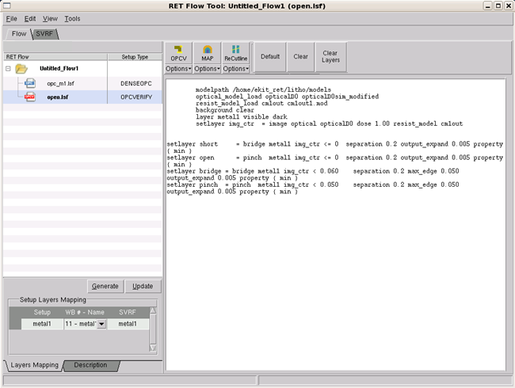

A Calibre OPCverify
session must be correctly loaded and configured before you can use
it to perform verification tasks.
Restrictions and Limitations
Procedure
- Follow the steps in “Creating a Session” to create a Calibre OPCverify
session.
If you used one of the
methods that loaded an existing file, your RET Flow Tool should
look similar to Figure 1.
If the session text entry
pane is empty, you can use the Copy and Paste options from the Edit menu or right-mouse context
menu inside the text pane to copy directly from a Calibre OPCverify
rule file.
Figure 1. RET Flow Tool, Calibre
OPCverify Session
- Assign layers in the Setup
Layers Mapping list from the active layout list to the listed layer
outputs from the Calibre OPCverify file.
If you leave a layer set
as Dummy Layer, it is considered to be hidden. Only layers assigned
from the list are considered visible.
If layers are incorrectly
mapped, running Calibre OPCverify may give unexpected results.
- Test Calibre OPCverify by
clicking the OPCv button.
Results
Calibre OPCverify runs the script,
and any layers that created result markers or contours are added
to the active layout in the viewer main window.